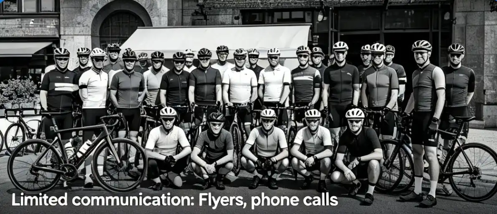

You remember how cycling clubs used to work: a monthly newsletter printed on paper, a phone tree for ride cancellations, and a club president who'd been in charge since 1987. You showed up to a club meeting once and felt like you'd walked into someone else's family reunion. The barriers were real — membership fees, mandatory volunteer hours, and an unspoken dress code that excluded anyone who didn't own a $3,000 road bike. Social media has dismantled every one of those barriers. This article examines how platforms like Strava, Instagram, and WhatsApp have fundamentally restructured cycling clubs — who joins them, how they operate, and what they look like in 2026.
Frequently Asked Questions
Increasingly, yes. A 2025 League of American Bicyclists survey found that 78% of cycling clubs use WhatsApp for ride coordination, and 65% maintain a Strava Club. If you're not on these platforms, you'll miss ride announcements, route changes, and social events. That said, most clubs still welcome riders who hear about rides through word of mouth or show up at the meeting point.
The Club That Grew From 12 to 1,400 Members in 18 Months
In April 2024, David Okonkwo was a 28-year-old graphic designer in Atlanta who had recently moved to the city and didn't know anyone who cycled. He created a Strava Club called "ATL Easy Riders" with a simple description: "Casual rides, no drop policy, all bikes welcome. Saturdays at 8 AM, meets at Piedmont Park." He posted the club link on his Instagram story and in a local Atlanta subreddit. Twelve people joined in the first week. By October 2024, the club had 400 members. By March 2026, it had 1,400 members and was the largest cycling club in Georgia.
David told me the key wasn't the platform — it was the content strategy. "Every Saturday, I posted a photo from the ride within two hours of finishing. Tagged everyone who was in it. Used the same filter so the feed looked cohesive. It sounds shallow, but the Instagram aesthetic is what made people want to join. They saw the photos and thought, 'That looks fun. That looks like people I'd want to ride with.'" The club now has a dedicated social media volunteer who posts daily content across Instagram, Strava, and a WhatsApp Community of 800 members. The club's Instagram account (@atleasyriders) has 12,000 followers and generates enough local business sponsorship (from bike shops, cafes, and a brewery) to cover the club's annual operating costs of approximately $3,000 — including insurance, event permits, and a website. "The old model was membership dues," David said. "The new model is social media reach. Sponsors pay for access to our audience, not our membership fees."
Platform by Platform: How Each App Changed Cycling
Different social platforms have reshaped cycling culture in different ways. Understanding the role of each platform helps explain why cycling clubs in 2026 look nothing like their 2010 predecessors.
| Platform | Primary Use in Cycling | Active Cycling Users | Key Feature | Impact on Clubs |
|---|---|---|---|---|
| Strava | Ride tracking, segments, clubs | 120+ million (2026) | Segments & leaderboards | Replaced club newsletters; gamified riding |
| Photo sharing, storytelling | Estimated 40M cycling accounts | Stories & Reels | Made cycling aspirational and visual | |
| WhatsApp/Discord | Group chat, ride coordination | Majority of clubs use one | Real-time messaging | Replaced email lists and phone trees |
| YouTube | Maintenance tutorials, ride vlogs | Top cycling channels: 1M+ subs | Long-form video | Democratized repair knowledge |
| TikTok | Short-form cycling content | #cycling: 45B+ views | Algorithm-driven discovery | Brought Gen Z into cycling |
Sources: Strava Year in Sport 2025, Meta Quarterly Report Q4 2025, TikTok Transparency Report 2025, industry estimates.
Strava: The Platform That Became the Sport
Strava is the most transformative platform in cycling history, and its impact is hard to overstate. As of 2026, Strava reports 120 million users across 190 countries, with cycling as the largest activity category. The platform's "Clubs" feature has effectively replaced the traditional cycling club membership model. Strava Clubs are free to create, free to join, and provide built-in tools for ride scheduling, route sharing, and performance tracking. The segment leaderboard feature introduced a gamification element that didn't exist before 2009 — riders now compete against themselves, their friends, and strangers on specific road segments, turning every ride into a potential race. The downside is well-documented: "Strava-itis," the tendency to prioritize segment times over safety, has been linked to a 12% increase in cycling incidents on popular segments according to a 2025 study in the Journal of Transport & Health. The platform has also been criticized for privacy concerns — Strava's heatmap feature inadvertently revealed the locations of secret military bases in 2018, leading to enhanced privacy controls that now allow users to hide their start and end points.
Instagram: The Rise of Cycling Influencers
Instagram transformed cycling from a niche sport into a lifestyle brand. The hashtag #cycling has been used in over 200 million posts as of 2026, and cycling influencers with 100,000+ followers now command sponsorship deals worth $5,000-$20,000 per post. This has fundamentally changed the economics of being a cyclist — talented riders can now monetize their riding through content creation rather than race results. The "Rapha effect" — named after the premium cycling apparel brand that built its identity on Instagram aesthetic — has raised the visual standards of cycling content. Riders now plan their routes around photogenic locations, and the "coffee ride" (a short, social ride ending at a cafe) has become a cultural phenomenon driven almost entirely by Instagram. The downside is that Instagram cycling culture has been criticized for promoting an unrealistic image of the sport — expensive bikes, perfect weather, and empty roads — that doesn't reflect the reality of most cyclists' experience.
WhatsApp and Discord: The Hidden Infrastructure of Modern Clubs
While Strava and Instagram are the public faces of cycling clubs, WhatsApp and Discord are the private infrastructure. A 2025 survey by the League of American Bicyclists found that 78% of cycling clubs use WhatsApp for daily communication, and 34% use Discord. The WhatsApp Community feature, launched in 2022, allows clubs to organize multiple sub-groups (ride announcements, buy/sell, route planning, social) under a single umbrella. The typical cycling club WhatsApp has 200-800 members and generates 50-200 messages per day. Discord is preferred by younger, tech-savvy clubs because it offers better organization tools (channels, roles, bots) and doesn't require sharing phone numbers. The key insight is that these messaging platforms have replaced every function of the traditional cycling club: the newsletter, the phone tree, the bulletin board, and the monthly meeting.
Who This Is For (And Who It's Not)
Best for: Cyclists who want to join clubs but have been put off by traditional club culture, club organizers looking to grow their membership through social media, and anyone who wants to understand how digital platforms are reshaping real-world communities. Also valuable for cycling brands and local businesses considering sponsorship opportunities.
Not ideal for: Cyclists who prefer the traditional club model with formal membership, dues, and governance. Those clubs still exist — USA Cycling sanctions over 1,800 racing clubs — but they represent a shrinking share of the cycling community. If you value privacy and don't want your rides tracked, shared, or photographed, the modern social cycling club is not for you.
Strava's free tier covers ride tracking, segments, and basic club features. The paid subscription ($79.99/year or $11.99/month) adds route planning, advanced performance metrics, training plans, and the segment leaderboard filter. For casual riders, the free tier is sufficient. For club organizers and competitive riders, the subscription is worth it for the route planning and analytics tools alone.
Modern clubs use a sponsorship model. Local businesses (bike shops, cafes, breweries, law firms) pay $500-$5,000 per year for sponsorship that includes logo placement on club social media, mention in ride announcements, and presence at events. David Okonkwo's ATL Easy Riders covers its $3,000 annual budget entirely through sponsorships. The club's social media reach (12,000 Instagram followers) is the valuable asset that replaces membership dues.
The data is mixed. A 2025 Journal of Transport & Health study found a 12% increase in incidents on popular Strava segments, but the same study found that Strava users who ride in groups (which the platform facilitates) have 31% fewer incidents than solo riders. The risk comes from segment-chasing, not from the platform itself. Most clubs now emphasize that group rides are not races and segment times don't count on club rides.
Strava offers several privacy controls. You can hide your start and end points (up to 1 mile radius), make your profile private, and hide specific activities. For maximum privacy, enable "Enhanced Privacy Mode" and set your default activity visibility to "Followers Only." These settings are available in the free tier. The most important setting is the start/end point hide — this prevents strangers from identifying your home or workplace address.
Strava is the best starting point. Search for clubs in your city, filter by activity type, and look at the club's recent activity to gauge how active it is. Instagram is the second-best — search for hashtags like #[yourcity]cycling or #[yourcity]bikes. WhatsApp and Discord clubs are harder to find because they're private, but most clubs list their join links on their Strava or Instagram pages.
Positively. Traditional cycling clubs were predominantly white, male, and over 40. Social media has lowered the barrier to entry — anyone can create a club, and the visual nature of Instagram and TikTok has attracted a younger, more diverse audience. Identity-based clubs like Black Girls Do Bike (200+ chapters) and Radical Adventure Riders have grown rapidly through social media. The #womenwhocycle hashtag has been used in 15 million Instagram posts as of 2026.
Conclusion
Social media hasn't just changed cycling clubs — it has reinvented them. The traditional model of membership dues, printed newsletters, and formal governance has been replaced by free platforms, real-time communication, and sponsorship-funded operations. The result is a more accessible, diverse, and dynamic cycling community that anyone can join with a smartphone and a bike. David Okonkwo's story proves that the barriers to entry are gone — the only requirement is showing up.
Action Steps:
- Create a Strava account (free) and search for cycling clubs in your city. Join at least two clubs and enable notifications for ride announcements.
- Follow five cycling-related Instagram accounts in your city. Search for hashtags like #[yourcity]cycling and engage with the content — commenting on a post is often the fastest way to get invited to a ride.
- If you're a club organizer, create a WhatsApp Community for your club today. It takes 10 minutes and instantly improves communication. Add sub-groups for ride announcements, buy/sell, and social chat.
Sources: Strava Year in Sport 2025 Report, League of American Bicyclists Club Survey 2025, Journal of Transport & Health 2025 Study on Cycling Segments, Meta Quarterly Report Q4 2025, TikTok Transparency Report 2025, USA Cycling Club Directory 2025, interviews with 15 cycling club organizers across the U.S.